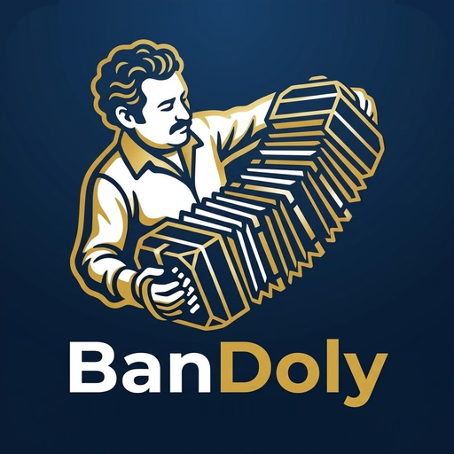
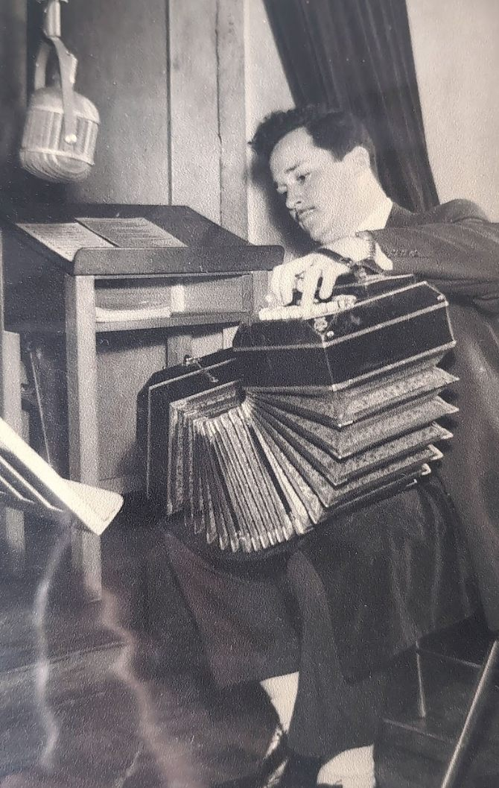
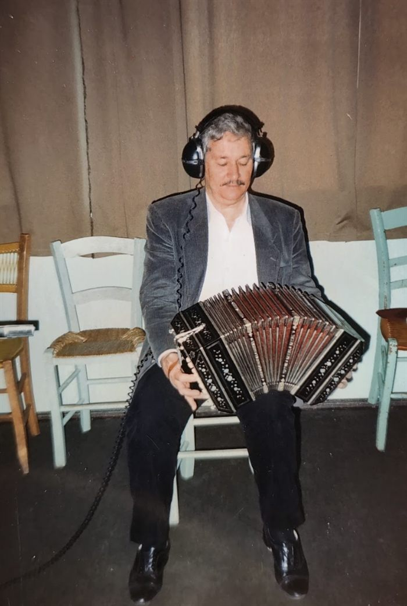
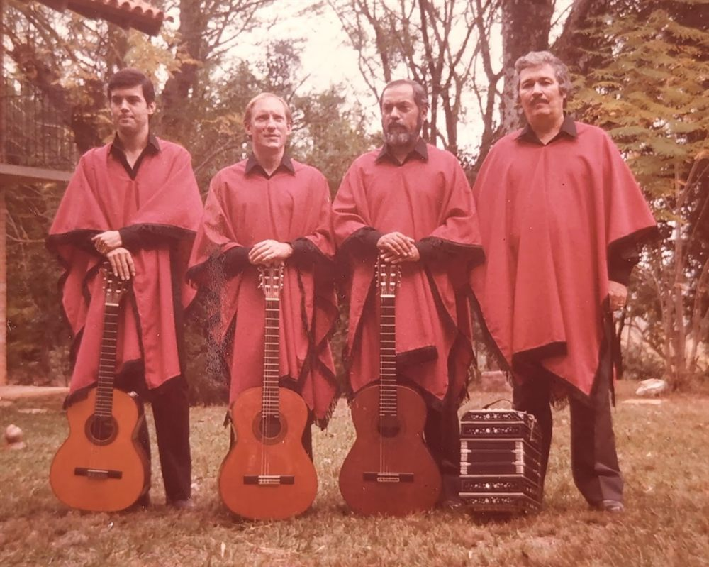
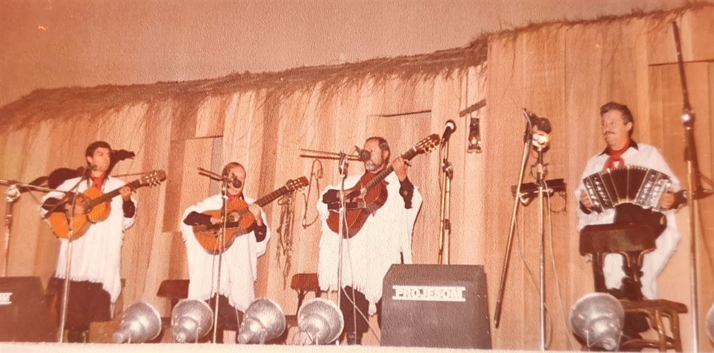

Aprenda a tocar bandoneon com o BanDoly
Aqui você aprende os fundamentos do bandoneon: como o instrumento funciona, o sistema bisonoro (cada botão dá uma nota abrindo e outra fechando), leitura nas duas claves e os ritmos essenciais do tango.
Dica: use fones de ouvido. O app funciona offline e o seu progresso fica salvo neste navegador. Em Ajustes você escolhe o som, a afinação e faz backup.
 A inspiração do nomeQuem foi Doly Costa? →
A inspiração do nomeQuem foi Doly Costa? →
Rotina de hoje
Por onde começar
- Faça as Lições em ordem.
- Explore o Teclado: toque, troque a direção do fole com Espaço e veja as notas mudarem.
- Treine nos Desafios até memorizar os botões.
- Pratique as Escalas guiadas (na aba Melodias): o app explica cada passo, cada troca de fole e onde está o próximo botão.
- Toque Melodias: primeiro ouça, depois toque no modo Espera e por fim No tempo.
- Pratique o Ritmo: marcato, síncopa e 3-3-2.
Som: SoundFont Bandoneon V2.5, de Jörg Bleymehl (gravado num bandoneon ELA de 1930; edição GM de Mike77154), de uso livre. Você pode trocar para o som sintetizado em Ajustes.
O que você encontra no BanDoly
Teclado com som real
Os 71 botões do bandoneon Rheinische 142 nas posições reais, com o som gravado de um bandoneon de 1930. Cada botão toca uma nota abrindo o fole e outra fechando.
Abrir o teclado →11 lições com quiz
História do instrumento, sistema bisonoro, fole e articulação, leitura nas duas claves, ritmos de tango, acordes e como ler uma partitura de tango.
Ver as lições →Desafios para decorar os botões
O app pede uma nota e você encontra o botão. O sorteio repete mais os botões que você erra, e o mapa de erros mostra onde treinar.
Fazer um desafio →Escalas e melodias guiadas
Escalas em todas as tonalidades e melodias com uma ou duas mãos, com partitura, a direção do fole sugerida e um modo que espera você acertar.
Tocar uma melodia →Acordes no bandoneon
Onde ficam os botões de 72 acordes (maiores, menores, com sétima e diminutos) em todas as tônicas, abrindo e fechando, nas duas mãos.
Ver os acordes →Ritmos do tango
Marcato, síncopa, 3-3-2 e arrastre, com metrônomo e um modo que mede se você está adiantado ou atrasado.
Praticar o ritmo →Funciona no navegador do computador e do celular, em português, espanhol e inglês. É gratuito, não precisa de cadastro e pode ser instalado como app para usar sem internet.
Perguntas frequentes
O que é o bandoneon?
É o instrumento de fole e botões que dá voz ao tango. Foi criado na Alemanha no século XIX e se tornou o símbolo do tango de Buenos Aires e Montevidéu. É bisonoro: cada botão toca uma nota ao abrir o fole e outra ao fechar.
Preciso ter um bandoneon para usar o BanDoly?
Não. Dá para aprender o mapa dos botões, a leitura e os ritmos só com o teclado virtual, no computador ou no celular. Se você tiver um bandoneon, o app também escuta você tocar pelo microfone e confere as notas.
O BanDoly é gratuito?
Sim. O BanDoly é gratuito e não precisa de cadastro. O seu progresso fica salvo no próprio navegador, e você pode exportar um backup em Ajustes.
Qual sistema de bandoneon o app usa?
O Rheinische 142, o padrão do tango: 71 botões, 38 na mão direita e 33 na esquerda, cada um com uma nota abrindo e outra fechando. Se o seu instrumento for diferente, dá para ajustar os botões no Teclado.
Funciona no celular e sem internet?
Sim. O teclado se adapta à tela do celular e aceita vários dedos ao mesmo tempo para tocar acordes. Instalando o app pelo botão em Ajustes, ele funciona mesmo sem internet.
Por onde eu começo?
Comece pelas lições 1 a 4, depois toque à vontade no Teclado e faça a escala de Dó maior no modo Espera. A Rotina de hoje, no topo desta página, sugere cinco tarefas curtas para praticar todo dia.
Encontre a nota
O app mostra uma nota e a direção do fole. Encontre o botão certo. Dez rodadas; depois de dois erros aparece uma dica.
O botão com contorno dourado é o próximo a tocar. A cor de cada nota mostra a direção sugerida do fole: abrindo fechando. Troque a direção com Espaço ou marque "Fole automático".
Acordes
No bandoneon cada acorde precisa ser aprendido duas vezes, abrindo e fechando, com botões diferentes. As opções são as posições mais compactas do mapa, com o baixo na tônica primeiro. "Inversão" quer dizer outra nota do acorde no baixo.
Ritmos do tango
Toque junto
Com o padrão tocando, bata no botão abaixo (ou aperte Espaço) junto com cada acento. O app mede se você está adiantado ou atrasado.
Ajustes
Seus dados
Progresso, melodias criadas e mapa de botões ficam guardados só neste navegador. Faça um backup para não perder nada ao limpar o navegador, ou para levar tudo a outro aparelho.
Mapa de botões
O app usa o mapa Rheinische 142. Se algum botão do seu instrumento for diferente, ajuste em Teclado → Editar layout.
Memória viva da música gaúcha
Quem foi Doly Costa?
Doly Carlos da Costa: uma vida dedicada ao bandoneón e à cultura gaúcha.
Natural de Caçapava do Sul, Doly Carlos da Costa construiu uma trajetória dedicada à música, ao bandoneón e à valorização das tradições do Rio Grande do Sul.
De suas primeiras apresentações em orquestras de baile à participação em festivais nativistas, sua história reúne talento, dedicação e reconhecimento cultural.
O nome BanDoly é uma homenagem a ele: bandoneon + Doly.
Linha do tempo
Principais acontecimentos e reconhecimentos da trajetória artística.
- Década de 1940Primeiros passos na música
Ainda adolescente, Doly começou a atuar em uma orquestra de baile em Caçapava do Sul, inspirado pelo bandoneón tocado por seu pai.
- Por volta de 1951Orquestras de tango em Porto Alegre
Aos 22 anos, mudou-se para a capital gaúcha, onde participou de orquestras de tango nas rádios Farroupilha e Gaúcha.
- 1977Fundação de Os Posteiros
Retomou suas atividades musicais e fundou o grupo Os Posteiros, ampliando sua participação na música regionalista e nos festivais nativistas.
- 17 de setembro de 2001Medalha Simões Lopes Neto
Recebeu do Governo do Estado do Rio Grande do Sul a Medalha Simões Lopes Neto, em reconhecimento à sua excepcional atuação no campo da cultura.
Reconhecimento oficial: certificado da medalha, Palácio Piratini, Porto Alegre. - 2011Prêmio Vitor Mateus Teixeira
Foi reconhecido na categoria Instrumentista pela Assembleia Legislativa do Rio Grande do Sul.
- 2011Homenagem na 25ª Moenda da Canção
Recebeu homenagem durante a edição comemorativa do festival em Santo Antônio da Patrulha.
- 2026Homenagem em Caçapava do Sul
Homenagem anunciada para o 4º Encontro de Bandoneón, em sua cidade natal.
Fotos




O legado de Doly Carlos da Costa
A trajetória de Doly representa uma contribuição importante para a preservação e divulgação do bandoneón no Rio Grande do Sul.
Sua participação nas orquestras de tango, a fundação do grupo Os Posteiros e os reconhecimentos recebidos ao longo da carreira evidenciam sua ligação com a música regional e a identidade cultural gaúcha.
Entre as homenagens, destaca-se a Medalha Simões Lopes Neto, concedida em 2001, que documenta o reconhecimento oficial do Estado por sua atuação cultural.